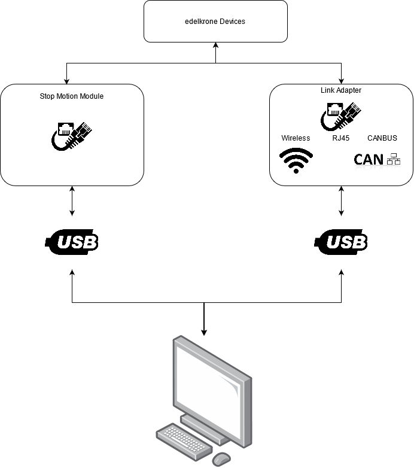
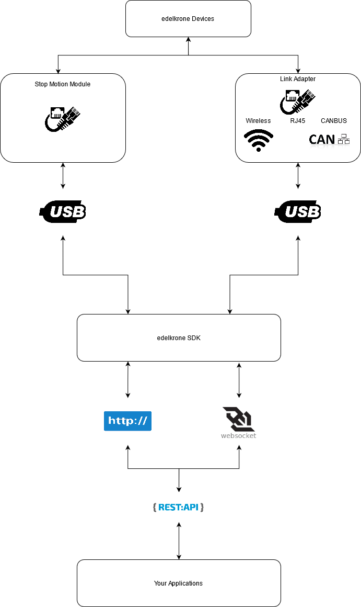
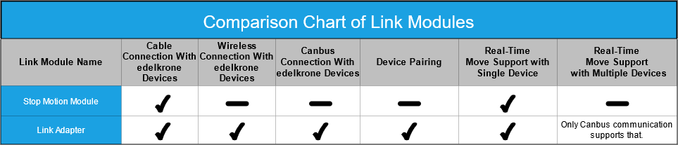

Flow
The edelkrone SDK is a daemon on your PC. It means that you should install it on your PC and it will run in the background.
This section explains the steps of SDK connection and how to manage the connected device.
Firstly check the below diagram;

As you can see above, this diagram shows that you need a physical connection between your PC and the edelkrone devices.
You can also check the diagram below to see how edelkrone SDK communicates with your device.

You can be connecting to your device with the following steps:
1. Make sure your link module(s) are plugged into your pc
As the diagrams above show, edelkrone SDK needs a physical connection to communicate with your device. Therefore, you should plug your link module into the PC. When you have plugged it in, The SDK will notify you about identified link modules.
2. Specify your requirements
The requirements mean what your needs are. These can be real-time moves or managing multiple devices at the same time.
For example; You need to manage multiple devices in real-time.
Caution
You should make sure that your link module meets your needs. It may be good to look at the comparison chart for the properties of the modules below before continuing to the document.

3. Choose Connection Types
The connection methods vary with the type of link module.
For example, you may want to move multiple devices over a wireless connection in real-time, but this type of connection type cannot do this. Or Stop Motion Module does not have this feature.
Also, you can reach how you can control your bundles by your link modules from here .
4. Choose a corresponding API endpoint to consider limitations
As you can see from the above diagrams, you can communicate with protocols that the SDK provides. These protocols are HTTP and Websocket, respectively.
While choosing the API endpoint, consider the limitations. These limitations are related to connection types or types of move.
For example; Some devices do not support some link modules. e.g., Stop Motion Module supports only Head Plus V1.
Also check limitations from here.
5. Controlling your devices
To control your device according to your needs and chosen communication protocol, you can continue from here.
Also, you can found an example application in here, which is written with Python.